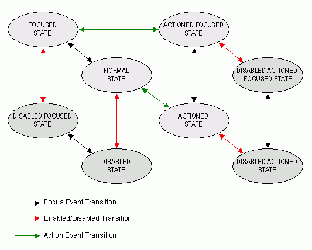

|
HAVi Java APIs 1.1 May 15, 2001 | ||||||||
| PREV CLASS NEXT CLASS | FRAMES NO FRAMES | ||||||||
| SUMMARY: INNER | FIELD | CONSTR | METHOD | DETAIL: FIELD | CONSTR | METHOD | ||||||||
This interface is implemented for all user interface components that can be actioned such that they "toggle" on and off and maintain the chosen state.
HComponent which
implement HSwitchable must respond to
HFocusEvent and HActionEvent events.
Applications should assume that classes which implement HSwitchable can generate events of the
types HFocusEvent and HActionEvent in response to other
types of input event.
An application may add one or more HActionListener listeners to the
component. The actionPerformed
method of the HActionListener is invoked whenever the HSwitchable is actioned.
HAVi action events are discussed in detail in the HActionInputPreferred
interface description.
HSwitchable component:
NORMAL_STATE
FOCUSED_STATE
ACTIONED_STATE
ACTIONED_FOCUSED_STATE
DISABLED_STATE
DISABLED_FOCUSED_STATE
DISABLED_ACTIONED_STATE
DISABLED_ACTIONED_FOCUSED_STATE
The state machine diagram below shows the valid state
transitions for an HSwitchable component.
|  |
Unlike HActionable components there
are no automatic transitions to other states. Actioned states
(i.e. those with the ACTIONED_STATE_BIT bit set may persist after any registered HActionListener listeners have been
called, until a further HActionEvent
is received.
HSwitchable interface. These classes shall all
generate both HFocusEvent and
HActionEvent events in
addition to any other events specified in the respective class
descriptions.
HNavigable,
HActionable,
HActionInputPreferred,
HActionEvent,
HActionListener| Method Summary | |
boolean |
getSwitchableState()
Returns the current switchable state of this HSwitchable. |
HSound |
getUnsetActionSound()
Get the sound to be played when the interaction state of the HSwitchable makes the
following transitions:
|
void |
setSwitchableState(boolean state)
Sets the current state of the button. |
void |
setUnsetActionSound(HSound sound)
Associate a sound to be played when the interaction state of the HSwitchable makes the
following transitions:
|
| Methods inherited from interface org.havi.ui.HActionable |
addHActionListener, getActionSound, removeHActionListener, setActionCommand, setActionSound |
| Methods inherited from interface org.havi.ui.HNavigable |
addHFocusListener, getGainFocusSound, getLoseFocusSound, getMove, isSelected, removeHFocusListener, setFocusTraversal, setGainFocusSound, setLoseFocusSound, setMove |
| Methods inherited from interface org.havi.ui.HNavigationInputPreferred |
getNavigationKeys, processHFocusEvent |
| Methods inherited from interface org.havi.ui.HActionInputPreferred |
getActionCommand, processHActionEvent |
| Method Detail |
public boolean getSwitchableState()
HSwitchable.HSwitchable.public void setSwitchableState(boolean state)
processActionEvent,
they are not called by setSwitchableState.public void setUnsetActionSound(HSound sound)
HSwitchable makes the
following transitions:
sound - a sound to be played when the HSwitchable transitions from an
actioned state. If sound content is already set, the original
content is replaced. To remove the sound specify a null HSound.public HSound getUnsetActionSound()
HSwitchable makes the
following transitions:
HSwitchable transitions from an
actioned state.
|
HAVi Java APIs 1.1 May 15, 2001 | ||||||||
| PREV CLASS NEXT CLASS | FRAMES NO FRAMES | ||||||||
| SUMMARY: INNER | FIELD | CONSTR | METHOD | DETAIL: FIELD | CONSTR | METHOD | ||||||||